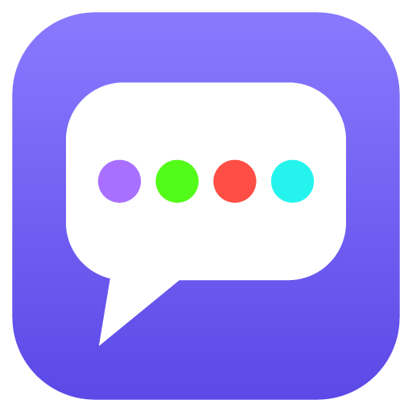

Privacy Policy
Supa Multi Chat ("the app") is a Windows desktop app and a Chrome extension that shows live chat from Twitch, Kick, YouTube and TikTok together. This policy explains what data the app uses and where it goes.
Data stored on your device
- Logins. When you log in to a platform, the app keeps that platform's access token so you stay logged in. In the desktop app it's encrypted with Windows' built-in data protection; in the extension it's kept in the extension's private storage. It is only ever sent to the platform it belongs to.
- Streamer profiles and settings. The channels you save and your preferences.
- Moderation log. A local record of moderation actions you take in the app.
- Chat. Chat messages are shown and kept in memory only while the app is open; they are not saved.
Google / YouTube data
In the desktop app you can log in with Google to post and moderate in YouTube live chat. The app requests the
https://www.googleapis.com/auth/youtube.force-ssl permission and uses it only to:
- send the chat messages you type to the YouTube live chat you choose;
- look up the live chat of the stream you are viewing;
- time out, ban or unban a user when you, as a moderator or channel owner, choose to;
- check whether you are a moderator of the chat you are viewing.
Your Google data is used only on your device to provide these features. It is not sold, not shared with anyone, not used for advertising, and not sent to the developer. The app's use and transfer of information received from Google APIs adheres to the Google API Services User Data Policy, including the Limited Use requirements. You can remove the app's access at any time at myaccount.google.com/permissions.
Chrome extension: logins already in your browser
The Chrome extension doesn't ask for your Kick or YouTube password. To let you chat and moderate, it uses the login you already have on those sites in Chrome:
- Kick: it reads kick.com's
session_tokencookie and sends it only to kick.com, the same way kick.com's own page does. - YouTube: it reads youtube.com's
SAPISIDlogin cookie to sign requests the way youtube.com's own page does, and sends them only to youtube.com. - TikTok: to connect to a TikTok LIVE chat it briefly stores a temporary visitor cookie for TikTok's chat server only, and removes it once connected. Your own tiktok.com cookies are not read or changed.
These cookies are read on your device only when needed, are never sent anywhere except the site they belong to, and are never sent to the developer. Logging out on kick.com or youtube.com disconnects the extension too.
Services the app connects to
| Service | Why | What it receives |
|---|---|---|
| Twitch, Kick, YouTube, TikTok | Read chat, and (when you're logged in) post and moderate | The channels you open; your login token for that platform only when you're logged in |
| 7TV, BetterTTV, FrankerFaceZ | Emotes, and 7TV profiles on user cards | The channel or user IDs being shown |
| api.ivr.fi | Twitch follow and subscription info on user cards | The Twitch user and channel names being shown |
| Euler Stream (tiktok.eulerstream.com) | Connecting to TikTok LIVE chat | The TikTok live room ID being opened |
| Link-in-bio sites (e.g. Linktree) | Finding a streamer's other channels from links they posted | A normal page request for that streamer's public page |
| Google Fonts | Only if you pick a Google Font in Settings | A normal font download request |
Like any web request, these services see your IP address. Their own privacy policies apply to them.
Deleting your data
- Log out of any platform under Accounts to delete its stored login.
- Desktop app: uninstall it from Windows Settings → Apps and choose to delete your data when asked.
- Extension: removing it from Chrome deletes everything it stored.
- You can also revoke the app's platform access from each platform's connected-apps settings.
Children
The app is not directed at children under 13 and does not knowingly collect their data.
Changes
If this policy changes, the new version will be posted on this page with a new effective date.